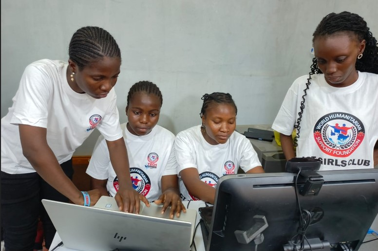
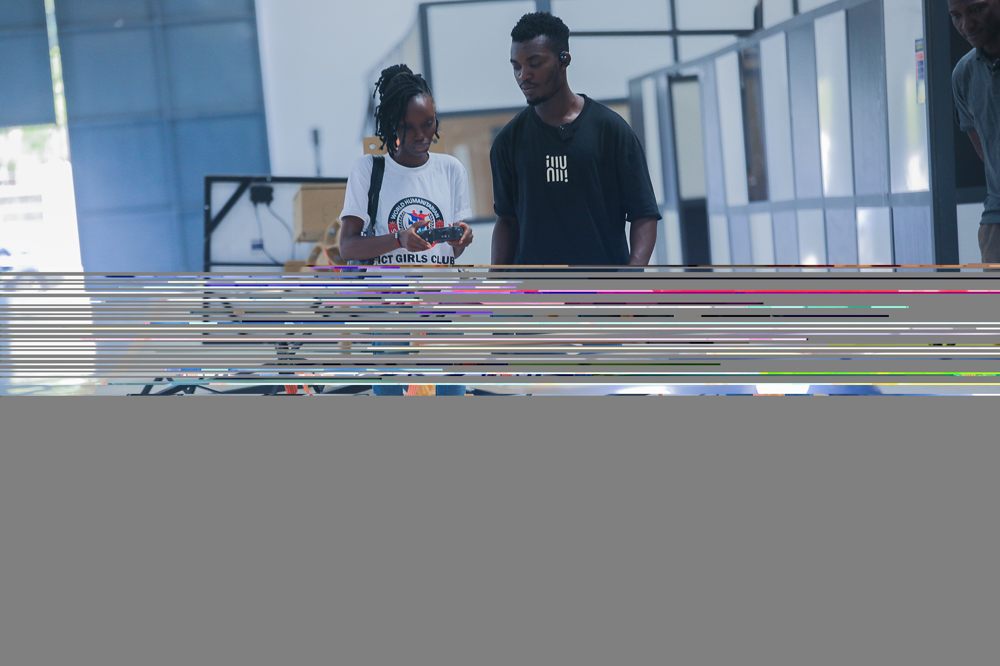
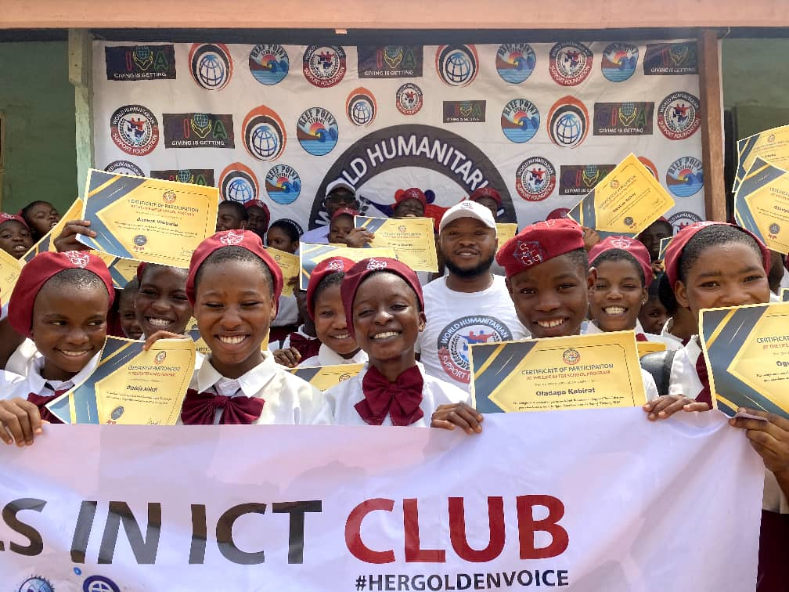
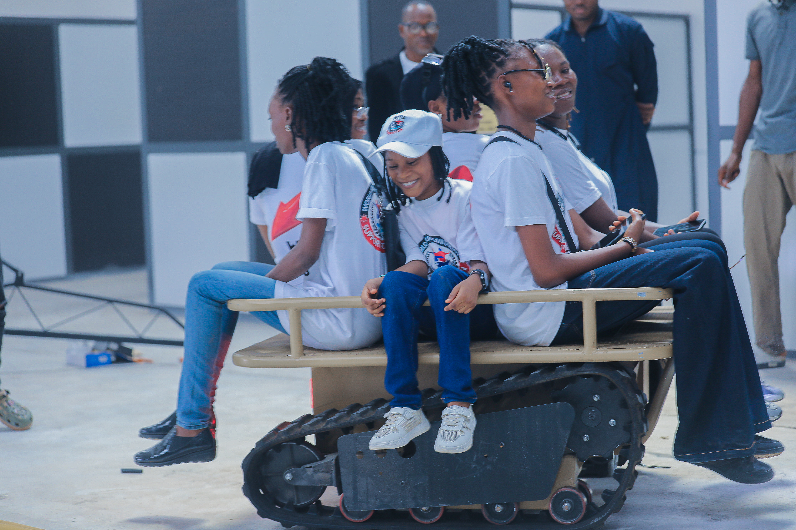
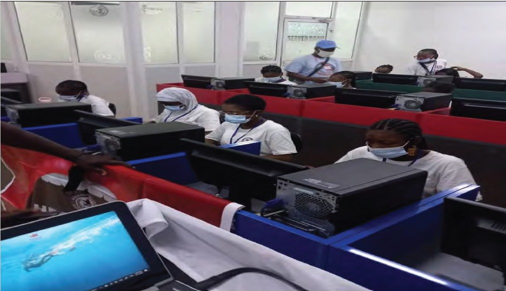
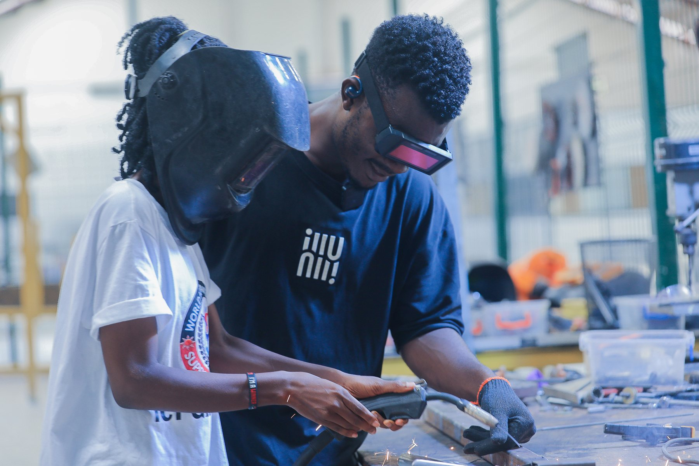

Digital Skills & e-Learning
Accessible digital literacy, online learning and certificates that help learners participate with confidence.
- Digital foundations
- Productivity and safety
- Flexible learning tracks

Our programmes
WHSF programmes equip girls, women, young people and underserved communities with practical digital skills, AI awareness, STEM education and pathways to participate in a changing world.
Our programme areas
Each pathway combines accessible learning, practical experience and clearer routes into education, enterprise, work or community action.

Accessible digital literacy, online learning and certificates that help learners participate with confidence.

Safe, practical learning spaces that strengthen digital confidence, curiosity and future ambition.

Hands-on STEM activities that build engineering thinking and practical problem-solving.
A global education and talent ecosystem connecting learners with skills and opportunity pathways.
Applied technology and climate-smart learning for rural and peri-urban girls and communities.
Published programme indicators
Figures may overlap across activities and should not be added together as a single beneficiary total.
Girls impacted since 2015
Young women empowered
Course enrolments
Certificates issued
Learning tracks

Featured programme
Hands-on robotics, drone technology and digital skills build confidence, engineering thinking and practical problem-solving while reconnecting rural and out-of-school learners with education.
Learning by building, testing and solving.
Robotics, drones and engineering pathways.
Supportive learning for underserved girls.
More ways WHSF expands access
Our wider programme ecosystem connects technology education with trusted information and long-term development.

Girls in ICT
Media & Information Literacy

Scholarships
Help expand our programmes
Partners and collaborators